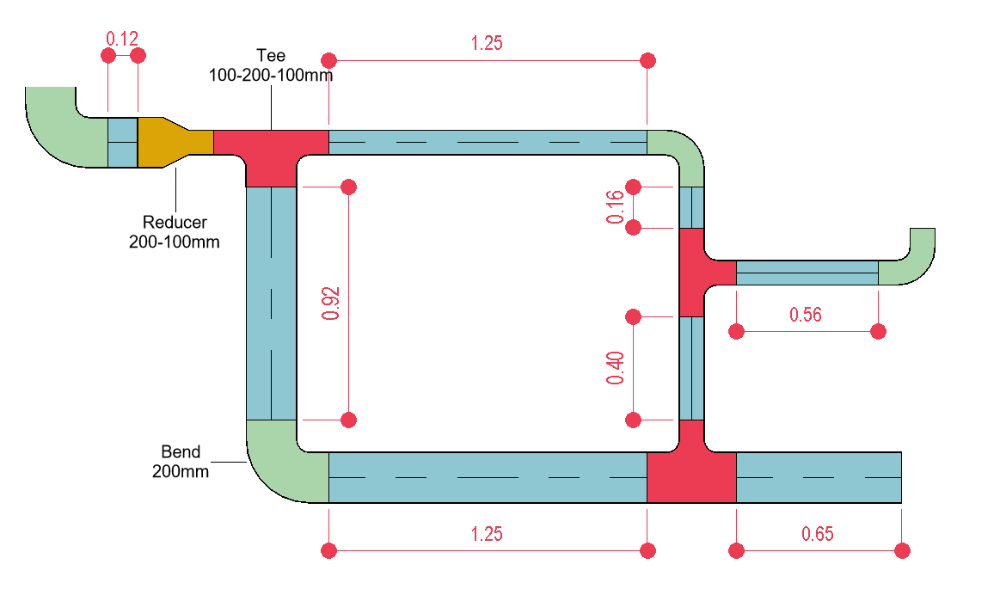

This approach consists of measuring the length of cable containers by length and fittings by units, as shown in Figure 15.
This quantification must be individualized based on the elements’ characteristics.
 Figure 15 - Quantification of cable containers in length and fittings by unit.
Benefit & Usage: This measurement approach provides a more accurate and detailed quantity of these elements; therefore, it is more frequently observed in more advanced project phases.